奇安信 x 华与华10年持续合作总结从 2012 年开始，华与华和奇安信团队合作至今，华与华提供品牌管理、营销传播的咨询服务，并提供企业发展战略的咨询建议。和 B2C 相比，奇安信作为科技类企业， B2B产品和业务是一个复杂体系，加上网络安全有很高的专业性和技术性，受众理解门槛高。华与华的工作就是通过词语和符号的技术，在每个传播点上不断降低传播成本，让大家更好理解网络安全、理解奇安信。华与华方法一直服务于奇安信的快速发展，诠释了
“华与华=战略咨询公司+产品开发公司+广告公司”的价值。
奇安信企业案例，分享以下 7 方面：1 、网络安全进化论：从“互联网安全”到“网络安全”。2 、奇安信战略破局之道，华与华“三位一体”模型，助力企业“定大计”：1 ）企业家独到的战略判断；2 ）保护网络安全的企业战略构想和三大业务分类；3 ）奇安信，新一代网络安全领军者。3 、华与华品牌三角形，助力奇安信构建品牌传播“解码器”：1 ）符号系统：找到文化母体，创作“数据虎符”超级符号和“网安一哥”超级角色；2 ）话语体系：共创“三个快一步”，成为销售最强话术。4 、华与华企业公关产品开发，助力奇安信构建品牌传播“信号塔”：1 ）重新定义公关：企业的社会服务产品；2 ）网安行业首席知识官奇安信，持续积累 BCS 大会高势能。5 、超级符号就是超级品牌，助力奇安信积累“奥运品牌资产”：1 ）奥运前和奥运中：网络安全中国代表队；2 ）奥运后：冬奥标准奇安信，网络安全零事故。6 、华与华创意持续改善，助力奇安信构建品牌传播“弹药库”：1 ）以门店改善思路，助力奇安信展会营销降本增效；7 、奇安信，网络安全的国之重器。

项目背景1 、网络安全，是数字经济发展的压舱石2021 年 3 月，国家发布《“十四五”规划和 2035 年远景目标纲要》，纲要明确提出，“加快数字化发展，建设数字中国”，把网络安全与人工智能、大数据、区块链、云计算共同列为 5 大新兴数字产业。网络安全被提到了一个前所未有的国家战略高度。2021 年 6 月，国家颁布新的《数据安全法》，和 2007 年颁布的《信息安全等级保护管理办法》、 2014 年成立的中央网信办、 2015 颁布的《国家安全法》、 2016 年颁布的《网络安全法》，它们互相呼应，网络安全作为一种顶层设计，成为了国家战略的一部分。没有网络安全，就没有国家安全。在今天这样一个时代，网络安全已不是一道要不要做的选择题，而是一道如何答好的必答题。随着数字化浪潮的加速发展，互联网开始从消费端向生产端、政府端渗透。数字化浪潮带动了云计算、物联网、智能制造等各个产业，安全是发展的前提，没有安全保障，再大的经济成果也可能毁于一旦，全面数字化后对于网络安全的需求激增。2020 年以来，我国网络安全产业进入爆发期， 2025 年有望超 3400 亿。加上 2022 年的俄乌冲突，愈演愈烈的网络空间战，更是将网络安全和国家安全紧密捆绑，我国的网络安全产业迎来更大的机遇。2 、“网安一哥”奇安信，十年合作华与华奇安信科技集团，成立于 2014 年，是中国最大的网络安全公司（与上市公司相比，人员规模、收入规模、增速和产品覆盖度，行业第一），专注于网络空间安全市场，向政府、企业用户提供新一代企业级网络安全产品和服务，主营 to G 、 to B 业务。2019 年 5 月，中国电子信息产业集团战略入股奇安信（中国电子是中央管理的国有重要骨干企业和国务院认定的以网信产业为核心主业的中央企业，连续多年跻身《财富》世界五百强），奇安信正式成为“网络安全国家队”。2019 年 12 月，奇安信更是成为奥运会历史上第一个网络安全和杀毒软件官方赞助商，国际影响力快速提升。2020 年 7 月，奇安信科技集团股份有限公司（简称“奇安信”）成功上市，登陆科创板，被媒体称为“网安一哥”。
2022 年 3 月，奇安信圆满完成北京冬奥会、冬残奥会的网络安全保障任务，兑现了“零事故”承诺，创造了奥运会历史和网安行业的历史，国际品牌影响力大幅提升。
1网络安全进化论从“互联网安全”到“网络安全”2014 年后，中国信息化的发展重心逐渐从普通网民转向政企机构，从消费互联网向产业互联网升级。互联网安全的概念也进一步扩展至网络安全。相比于互联网安全，网络安全的涵盖范围更加广泛。数据安全、内网安全、专网安全、工业网络安全、供应链安全、关键信息基础设施保护、国家的网络空间主权利益等，都属于网络安全。总体来看，人们对网络安全问题的认知范围可以用三个转变来简单概括，即：从 I 到 C ： 从 Internet Security （ 互 联 网 安 全 ） —— Cyber Security （ 网 络 空 间 安全）；从 C 到 B ： Customer （个人、消费者）—— Business （组织、商业）；从 S 到 C ： Surface （外部）—— Core （内部）。
其中，转变核心是从“互联网安全”向“网络空间安全”的全面演进。在互联网时代，我们主要防止数据被破坏、被泄漏和网络瘫痪；在网络空间安全时代，安全目标是包含设施、数据、用户、操作在内整个网络空间的系统安全。攻击物联网，就等于攻击物理世界。伴随着从“互联网安全”向“网络空间安全”的全面演进，要求人们必须从更高的维度、更广的视角来审视网络安全问题。因为在物联网的时代，除了要关注信息安全，更要思考如何保障关键信息基础设施和众多物联网设备的运行安全。
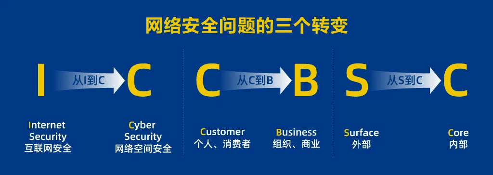
在物联网的时代，网络攻击的目标已经升级到了政府、企业等机构和组织，以达到破坏社会稳定的目的。安全公司服务的客户也变成了政府和企业，维护政府和企业的安全直接关系到社会稳定和国家安全。为什么奇安信能保护好中国的网络安全，为中国社会解决数字化转型时代的大难题？
2奇安信战略破局之道华与华“三位一体”模型
企业家独到的战略判断早在十年前，齐向东董事长就预言了当今的 B2B 时代：“互联网安全不会是 To C 的生意，而是 To B 的业务。互联网 B2C 的红利已经过去了，流量变现的红利已经被瓜分完毕，未来是 B2B 的时代。物联网时代，所有的设备都被网络连接起来，所有的设备都需要互联网安全的保护；互联网安全的保护，一定是由终端产品厂商向消费者提供，而不会是消费者自己去购买。那么，终端产品厂商就要向互联网安全企业购买安全产品和服务，这是一个 B2B 的事业。”
华与华“三位一体”模型，助力奇安信“定大计”华与华认为企业战略不是企业的战略，而是企业为解决某一社会问题而为社会制定的战略。根据社会问题，我们制定企业经营使命，并由经营使命制定企业的业务战略，由此形成了华与华方法企业战略“三位一体”模型。该模型明确指出企业的诞生，首先是“无我”的，为社会解决问题，降低社会交易成本。找到了“网络安全”的中国社会问题后，根据华与华企业战略“三位一体”模型，为奇安信提炼出社会分工——保护中国网络安全，奇安信的企业社会责任和经营使命——保护中国网络安全。
使命决定战略，那么奇安信的企业战略，就是为了解决中国网络安全的社会问题，而为社会制定的战略。奇安信的产品和服务，就是关于网络安全社会问题的解决方案。以保护中国网络安全为经营使命，规划三个业务领域：国家网络安全、企业网络安全、用户网络安全。
为什么这么分？因为世界就是认识，认识就是分类，分类就是命名和标签，命名和标签就是词语和符号。这样的分类，就把保护中国网络安全的经营使命落实到了三个具体的方面，也就分出了我们的客户和业务：国家、企业、用户。
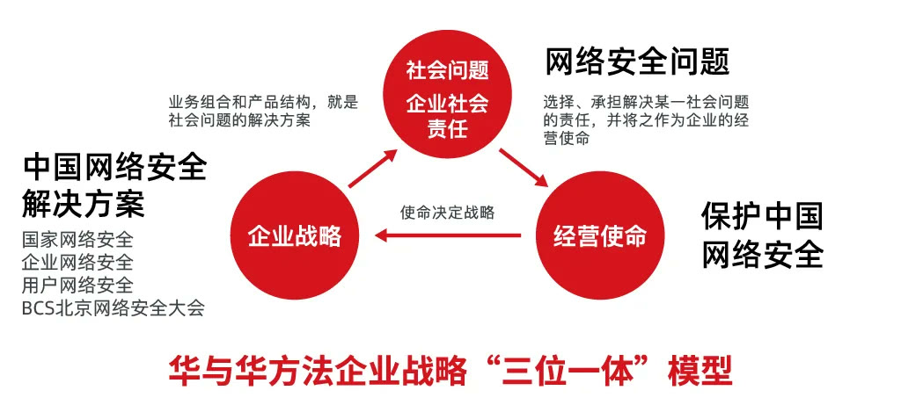
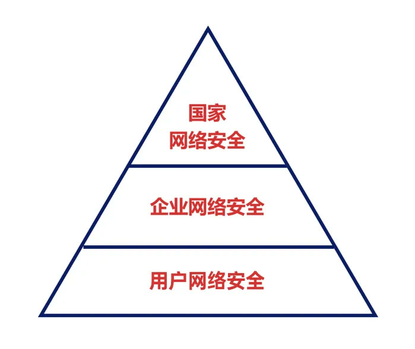
国家网络安全，是解决国家层面的网络安全问题，网络安全已上升到国家战略层面，与国家关键信息基础设施息息相关，成为总体国家安全观的重要组成部分。没有网络安全，就没有国家安全。企业网络安全是解决企业级网络安全问题的。包括为政府、企业各个行业提供安全产品、安全服务和解决方案。在全球互联的今天，用户的安全不只是用户自己的事情，而是附属于国家网络安全和企业网络安全的。解决了国家和企业方面的安全，用户自然就安全了。这三层，实际上是网络安全的金字塔，从国家到企业再到用户。奇安信在国家网络安全这个层面建立了高度后，在企业和用户层面的势能就越来越强，并且能更好地反哺国家。
奇安信，新一代网络安全领军者2014 年，奇安信成立，目标是研发新一代企业级网络安全产品、技术和服务，业务由个人级安全（ C 端）拓展到企业级安全（ B 端）。
相比于 ToC ， ToB 涉及的互联网多场景对企业的定制解决方案能力提出了更高要求，网络安全领域尤其如此；同时， ToB 更看重原始技术的创新，通过与企业沟通融合达到互利共赢，这也使得 ToB 市场的创新创业空间足够大。为此，从创立之初，奇安信就锚定 ToB 目标设定组织架构、服务方式、商业模式、管理办法、业务团队，提出并成功实践“数据驱动安全”“内生安全”等安全理念，以及面向新基建的新一代网络安全框架。
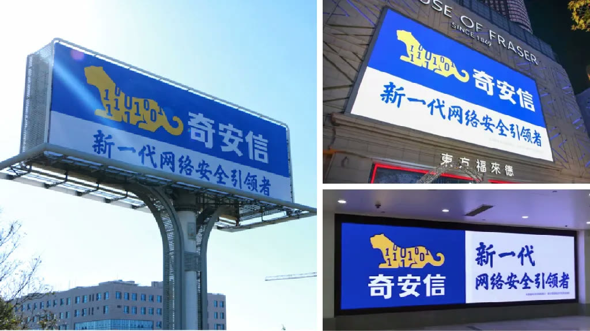
其中，“内生安全”框架能帮助企业建立完整的网络安全体系，化解“没思路、没方法”的难题。在此基础上，奇安信研发出以“天狗”系列第三代安全引擎为代表的颠覆性安全技术，推出零信任、“天眼”等创新的安全产品，形成了一套完整的攻防演习、安全众测、安全运营等实战化安全服务模式，成为国内领先的企业级网络安全产品和服务提供商。时势造英雄。在“一带一路”国际合作高峰论坛、金砖国家峰会、上合峰会、上海进博会等重大国际会议上，奇安信作为主要技术保障单位参与了网络安全保障工作。2019 年 12 月，奇安信更是成为奥运网络安全服务与杀毒软件官方赞助商，为 2022 年举行的北京冬奥会和冬残奥会提供系统的网络安全保障。 2020 年 11 月，奇安信推出的新一代企业网络安全框架（内生安全框架），荣膺 2020 世界互联网领先科技成果。
3华与华品牌三角形助力奇安信品牌传播“解码器”华与华认为：所有的品牌工作，都是产品结构、话语体系、符号系统这三件事。没有任何一件关于品牌的工作，不在这三件事之内；而在这三件事之外，也没有任何事情与品牌有关，这就是“完全穷尽”。绘制品牌三角形，是品牌一生的工作。因为她不断在丰富，在发展；在华与华品牌五年计划的第一年，我们会为客户画出基本的品牌三角形，之后每一年的所有工作，都不断地从品牌三角形出发，再回到品牌三角形。确定奇安信企业战略和“网安一哥”的品牌位势后，双方团队合作，绘制出奇安信品牌三角形。
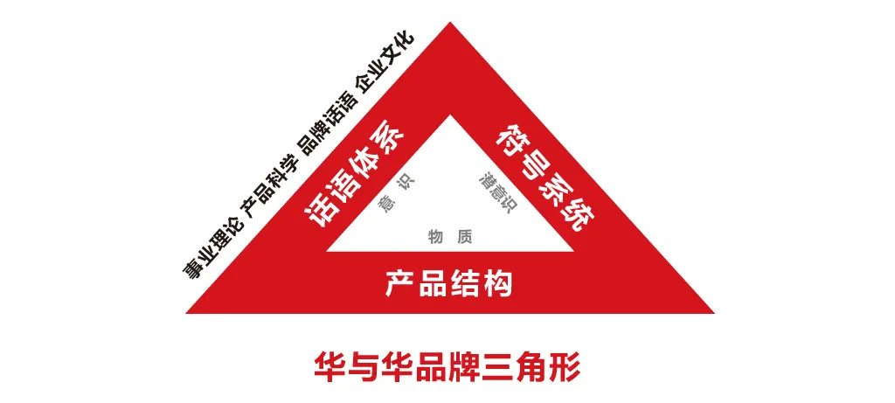
符号系统：创意“数据虎符”超级符号和“网安一哥”超级角色数据虎符：蕴藏两千年文化原力的超级符号所有的传播都是符号的编码和解码，超级符号就是编码和解码效率最高的符号，它所蕴含的人类文化原力，能够激发人们的集体潜意识，让一个新品牌在一夜之间成为亿万消费者的老朋友。我们说品牌是一种商业思想，也是一种文化现象。文化符号，是指人类文化的原型符号，比如金元宝的形象是中国人代表财富的文化符号，而餐桌布的绿格子是全人类的饮食文化符号。奇安信是做网络安全的，在人类历史的长河中，和安全有关的文化符号有很多。但要配得上“网络安全国家队”的品牌位势，就要是国家级的安全符号。其中原力最强的就是虎符！
虎符是中国古代帝王授予兵权和调发军队的信物，最早出现于春秋战国时期。虎符分成两半，一半在皇帝手里，一半在将军手里，只要虎符能对上，就有权力调动军队。所以虎符代表着中国历史上最高权力——兵权，又代表着最机密的安全认证。虎符有着两千多年的历史文化传承，是中国古代安全智慧的结晶。将奇安信品牌嫁接到虎符上，就能激活虎符身上蕴藏两千年的安全之力，让奇安信一下子有了“两千年历史”。除此之外，华与华用二进制编码替换虎符身上的铭文，完成了虎符的私有化，奇安信品牌的超级符号——“数据虎符”就诞生了。
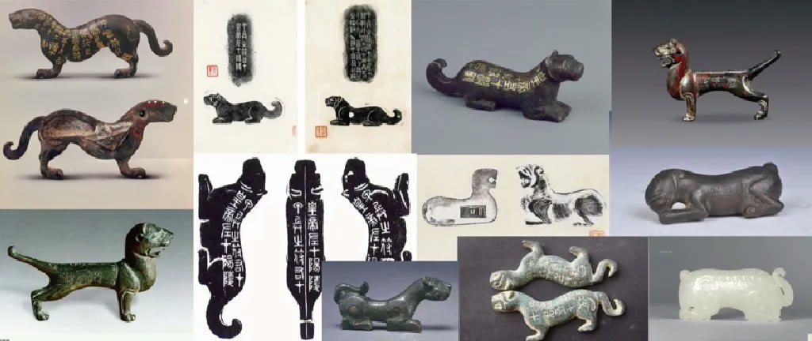
奇安信作为 B2B 厂商，常有领导和客户来集团总部考察交流，奇安信把超级符号做成了超级实物道具，在大厅里放置一只乐高虎符——用 56 万块乐高拼成，造价 100 多万。
每次有访客问到为什么使用虎符时，奇安信同事就将虎符代表的安全文化津津乐道地讲述一遍，而每一次的讲述都是对品牌的二次传播。并且，在访客将要离开时，都会在乐高虎符前安排合影留念，并把照片发送过去，这样访客就带走了一份品牌信物，便于他们回忆、谈论。现在，奇安信大堂的乐高虎符已经
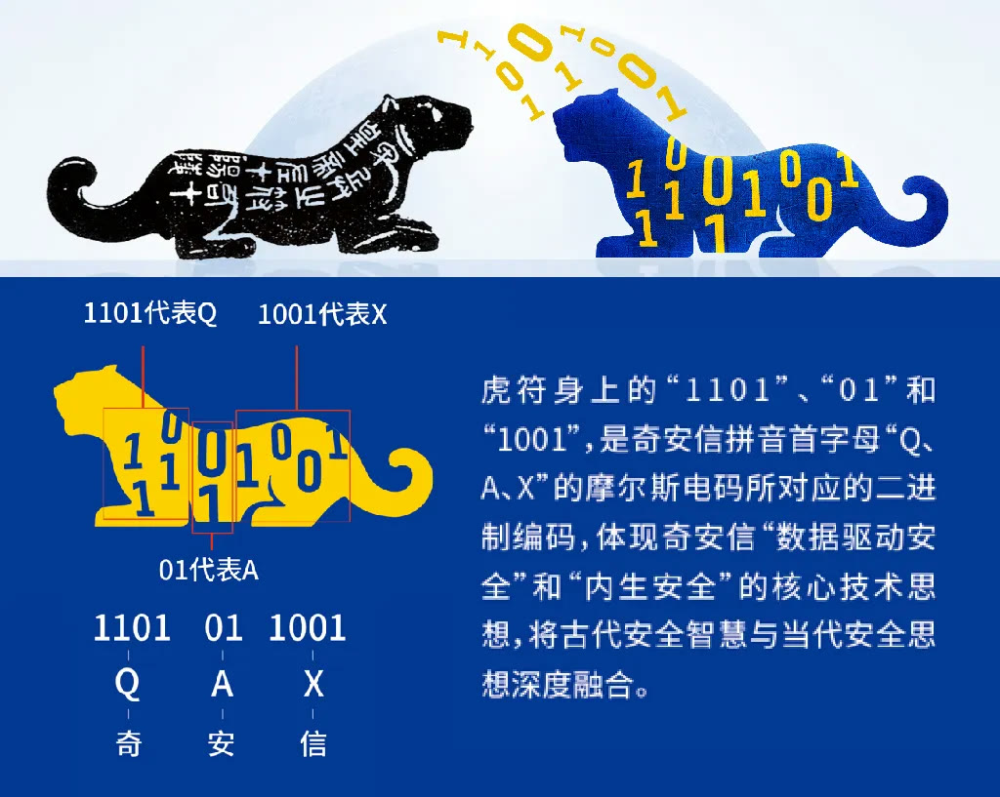
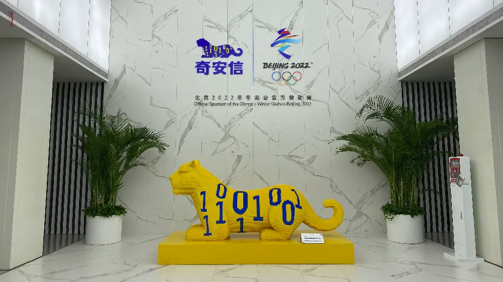
是领导视察、客户参观的首选打卡地。超级角色：品牌终身代言人“网安一哥”B2B 企业不能只卖冷冰冰的产品，更要传达有温度的人格化品牌形象。比如华与华公司，如果只传播一个“华”字标，大家对我们的记忆还能这么深刻吗？不会。正因为我们广告画面上都会出现真实的有血有肉的“华与华兄弟”，才会让大家记忆深刻。所以，奇安信以超级符号“数据虎符”为基础，也创作了一个品牌角色——“网安一哥”。网安一哥在线下展会、线上传播、广告片中广泛应用，成为奇安信的终身代言人。
话语体系：奇安信“三个快一步”，成为销售最强话术世界就是一个话语体系，没有话语体系，就没有世界。品牌当然也是一个话语体系，没有话语体系，就没有品牌。词语破碎处，无物可存在。建立和维护话语体系，是品牌永恒的工作。安全响应速度是政企用户最强的需求，网络一旦被入侵，时间就是生命，早一秒钟补救防线，就能阻止网络安全事故的发生。例如 2021 年 2 月，美国佛罗里达州一家水处理设施的系统被黑客攻击，攻击者试图改变控制水酸度的 NaOH （也被称为碱液，具有高腐蚀性）的浓度，准备将 NaOH 浓度从百万分之 100 提高到百万分之 11100 。所幸的是，此次网络攻击被及时发现，并进行了逆转，否则全市人民都将会有生命危险。
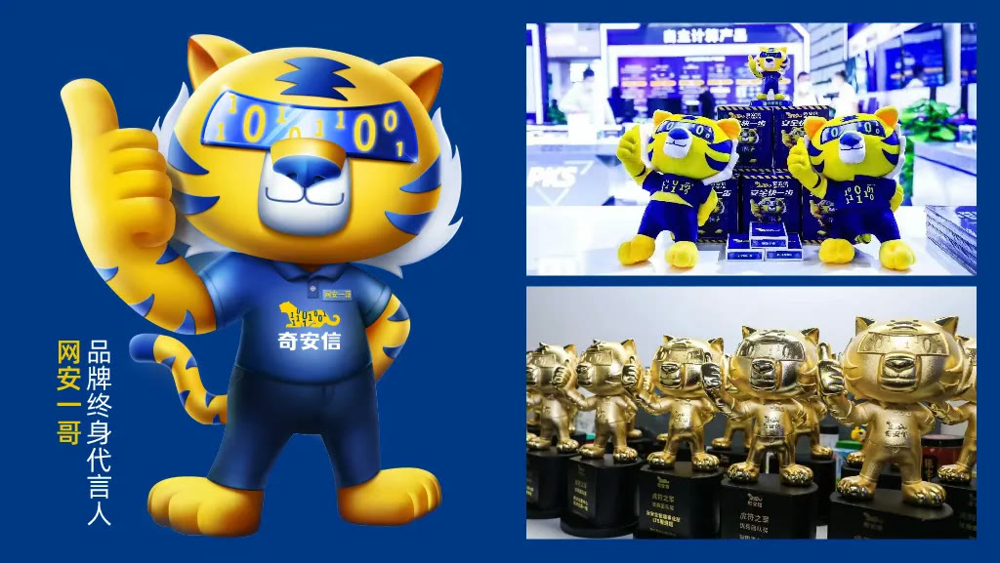
政府机构或大型企业一旦被攻击，所有的工作都瞬间停止，这将是多大的灾难。所以时间和速度是网络安全最需要的，也是奇安信一直在追求的。奇安信可以做到 24 小时应急，具备全行业反应最快的网络安全急救能力和体系，被称为“网安 120 ”。
很多科技品牌的广告语都是优美而不知所云。华与华为奇安信创作的品牌谚语一定要让每位销售代表、宣导员都能说出，说出后，客户一听就能记住，记住后还能回去告诉别人。“快一步”是奇安信的独特购买理由，所以我们创作出“奇安信，安全快一步”这句品牌谚语。
B2C 品牌，产品都存在于物理空间，可以通过不同的实物包装来区分；但对奇安信这样的 B2B 品牌来说，产品存在于网络空间，没有实物包装，如何区分并讲清楚奇安信产品，历来都是一个销售难题。
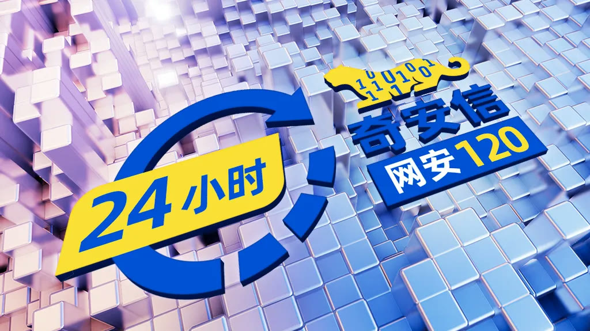
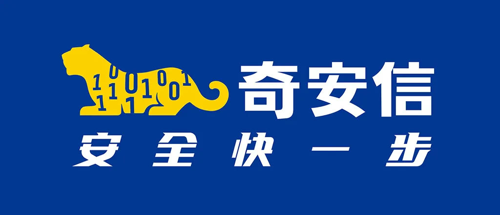
以品牌谚语“安全快一步”为基础，奇安信、华与华两个团队配合，通过模拟处置一个网络安全事件，在发现、规划和攻防三个步骤里，创作出“三个快一步”的话语体系。
第一类产品，日常态势感知：发现快一步，守好安全第一线；第二类产品，内生安全体系：规划快一步，让安全少走弯路；第三类产品，实战攻防产品：攻防快一步，掌握安全主动权。
“三个快一步”把奇安信复杂的业务归纳为三条产品线，上千个产品都装进去，完成产品正确的分类和封装，是做好 B2B 业务品牌传播的关键。
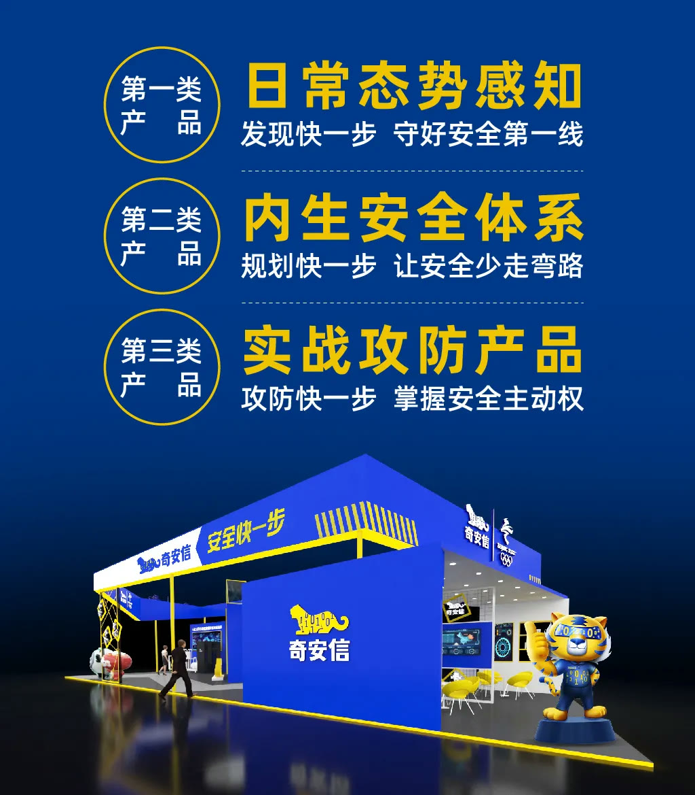
企业是经营知识的机构，也是为人类创造新知识的前沿。“三个快一步”的产品科学，就是奇安信的产品之所以先进的科学理论，因为这个科学，奇安信产品领先于竞争对手；奇安信产品科学得到广泛传播，得到更多客户更大的支持，也是对社会的知识贡献。
4华与华企业公关产品开发助力奇安信构建品牌传播“信号塔”重新定义公关：企业的社会服务产品公关行业的创始人——爱德华·伯尼斯说：公共关系是一项管理功能，通过制定政策和程序，来获得公众的谅解和接纳。这个定义的前提就假定为企业有错，需要刻意做些好事，来获得公众的原谅和接纳。庄子说：“行贤而去其自贤之行。”意思是做好事的时候，不要去做那些为了让别人认为我好的事，因为那是伪君子的思维方式。所以华与华重新定义了公关：即企业的社会服务产品。要用产品开发的思维做公关，开发公关产品。
奇安信科技集团主办的“ BCS 北京网络安全大会”就是一个免费的社会服务产品。奇安信在整个大会中没唱独角戏，也没有任何具体的营销和销售目的，而是广泛集合全球的网络安全技术、专家、机构和智慧，为中国网络安全提供一个世界级交流和研讨的服务平台。为了传递这是一个国际盛会的认知，华与华为北京网络安全大会创意了口号“全球网络安全，倾听北京声音”。
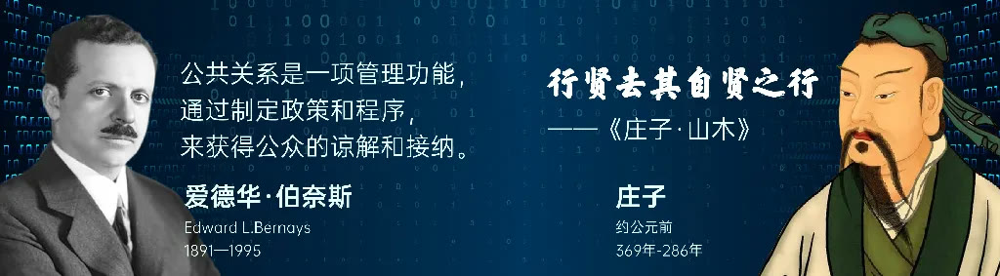
“全球网络安全”表明了大会是世界规格的、又是关于网络安全的大会；“倾听北京声音”，放大了“北京声音=中国的声音”的概念，代表大会既是中国的、又是世界顶尖的网络安全大会，这样就能够把全球网络安全的势能，都卷入到北京网络安全大会上。
网安行业首席知识官奇安信，持续积累BCS大会高势能2019 年 BCS 北京网络安全大会2019 年 8 月 21 日- 23 日，第一届 BCS 北京网络安全大会在北京国家会议中心圆满召开。三天参会人次超 5 万、超 300 家媒体全程关注。大会联席主席、奇安信集团董事长齐向东首次提出“内生安全”概念，呼吁构建“内生安全”体系，引发了业界热烈讨论和共鸣，进一步彰显奇安信“网安一哥”的行业地位。为更好聚焦“内生安全”理念，大会主题定为“聚合应变，内生安全”。
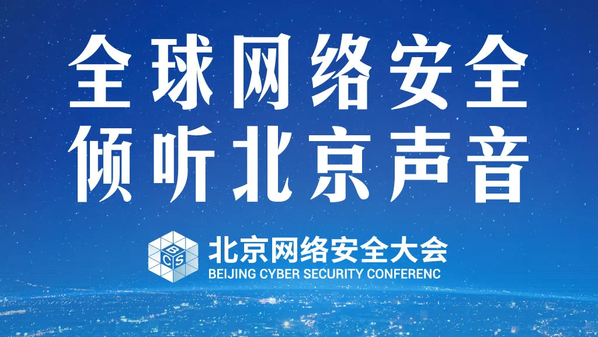
2020 年 BCS 北京网络安全大会2020 年 8 月 7 日至 16 日，第二届 BCS 北京网络安全大会成功举办。大会邀请来自中、美、英、德、荷、以等 11 个国家及联合国等国际组织的 500 多位政要、两院院士、安全行业领袖、产业精英，以及全球知名安全研究机构和知名企业，共同探讨并推进“内生安全”理念的落地与实践。大会首次采取“线上+线下”超融合云会议形式，历时 10 天，开创了网络安全大会时间最长的纪录。奇安信致力于打造的“内生安全框架”，是用系统工程的方法建成内生安全体系，将安全能力统一规划、分步实施，逐步建成。基于“内生安全框架”，并承接 2019 年的“内生安全”理念，大会主题定为“内生安全 从安全框架开始”。
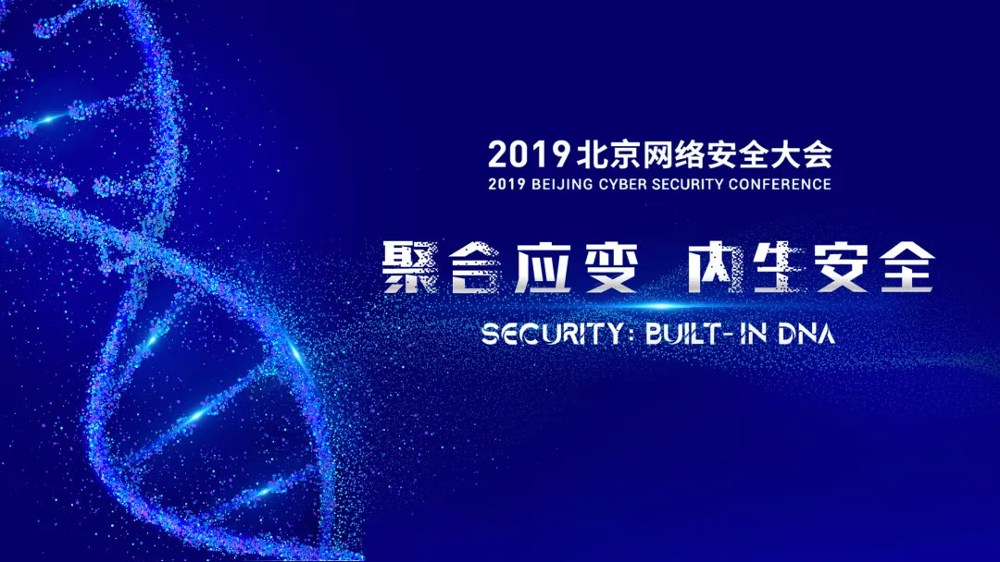
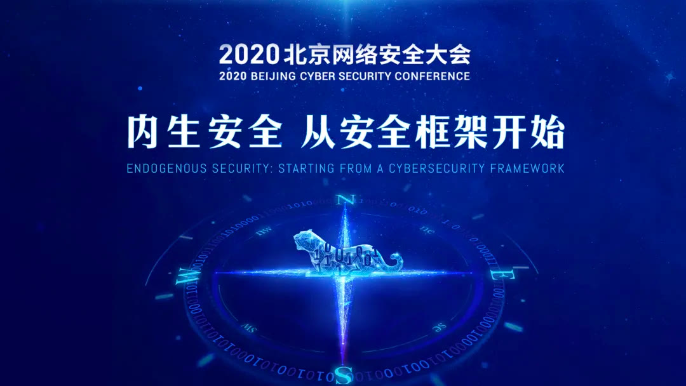
2021 年 BCS 北京网络安全大会2021 年 BCS 北京网络安全大会于 8 月 26 日- 28 日通过线上的形式举办，大会共展开 3 场峰会、 18 场论坛活动、 22 场产品发布。大会邀请了多位专家学者、产业顶级技术专家出席， 2008 年北京奥运会火炬手、院士及相关主管部门领导和奇安信集团董事长齐向东一起，共同宣布了“网络安全中国代表队”的正式组建，推动中国的网络安全产业以“更快、更高、更强、更团结”的奥运精神取得更大突破。大会主题定为“经营安全，安全经营”。
齐总说：“我们要像经营企业一样，经营网络安全，才能实现企业的长久安全经营。如果某打车平台没有经营它的安全系统，它是不是就不能安全地经营？同样，咱们看任何一个企业，尤其是涉及到国计民生的企业，如果不能够像经营企业一样，构建企业的网络安全系统，是不是就不能够持续稳健地安全经营？”2019 年的“聚合应变 内生安全”、 2020 年的“内生安全 从安全框架开始”和 2021 年的“经营安全 安全经营”， 这三届大会主题从理论、到方法、再到动态构建，共同组成了政企实施网络安全的“三部曲”。

奇安信决定做这件事的时候，只是基于一种"战略企图"--成为中国权威性的网络安全公司，没有这么多年奇安信的坚持，包括疫情期间依然能召开两届时间更长、规模更大的大会，那么 BCS 大会的影响力不会有这么巨大。可见事情都是干出来的，时间积累来的，自己涌现出来的，如果开始时不去行动，或者中间不能坚持，这一切都不会发生。
5超级符号就是超级品牌助力奇安信积累“奥运品牌资产”2019 年 12 月，北京冬奥组委与奇安信正式签约，奇安信成为北京 2022 年冬奥会和冬残奥会官方网络安全服务和杀毒软件赞助商。这看起来是普通的奥运赞助，但意义非凡，因为这是自 1896 年雅典首届现代奥运会以来，百年奥运历史上首次设立“网络安全”这一赞助商类别，奇安信当之无愧的成为首位赞助商，同时创造了奥运历史和网络安全行业的历史。守护北京冬奥会的网络安全，既是奇安信服务国家发展大局的光荣责任，又是提升品牌知名度、展现产品优势的宝贵机遇。如何实现营销价值最大化？成为奇安信和华与华面临的共同课题。
奥运前和奥运中：创意超级符号“网络安全中国代表队”
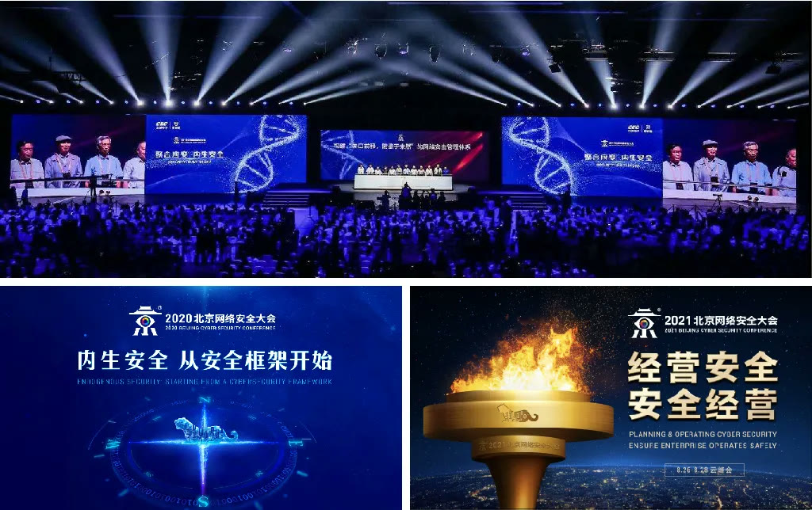
网络安全是隐秘战线，作为守护北京冬奥会的幕后英雄，同样是赞助商身份的奇安信不为公众所知，因为安全产品是存在于数字空间的，不像安踏有衣服的实物、盼盼有食品的实物、可口可乐有饮料的实物，奇安信的产品和服务都是大众看不见、摸不着的。奇安信、华与华共同创作了一个概念——“网络安全中国代表队”，成为奇安信永久的品牌资产。“中国代表队”是一个文化母体，大家看奥运会，最期待就是中国队能获得多少块金牌，中国队能破多少记录？“网络安全”又是奇安信的行业属性，等于把行业属性放在前面，把隐形冠军变成公众英雄。
把“网络安全”四个字框在中国印章里，方方正正，展示出安全责任感，再和虎符联合视觉呈现，这就是华与华为奇安信创作的超级符号。另外，这也打破了奥运赞助商的版权时间限制，奥运会后可继续使用，这就为奇安信积累了永久品牌资产。
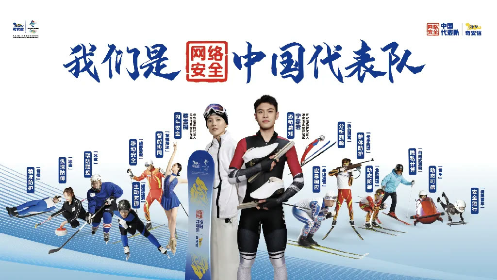
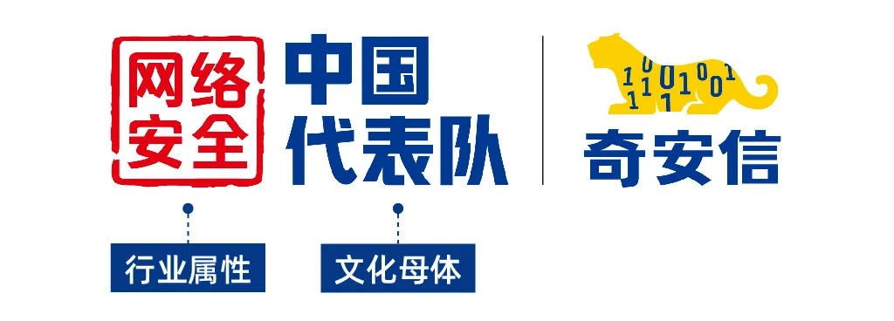
“网络安全中国代表队”由 15 位队员组成，代表了北京冬奥会 15 个大项目，这张巨幅大合影在网安展会上一出现，就成了全场最吸引人的焦点。以 15 个运动员，带出 15 个冬奥大项目，再对应奇安信 15 个大单品，一一映射形成 15 张的系列海报，用越来越多人喜爱的冰雪运动，带动观众理解网安抽象产品。
从超级符号“数据虎符”，到品牌角色“网安一哥”，再到网络安全中国代表队，符号、角色、冬奥项目代言人加在一起，大大提高了奇安信的品牌传播效率。“网络安全中国代表队”这个概念，天生具有号召力，能让更多的人感受到鼓舞和能量。随着越来越多的人加入，他们每一位都是网络安全中国代表队的一份子。让更多人关注网络安全，保护网络安全，这是“网安一哥”奇安信的社会责任和领导者格局。
奥运后：冬奥标准奇安信 网络安全零事故随着北京冬残奥会闭幕，奇安信圆满完成任务，实现北京冬奥会网络安全“零事故”，兑现了当初的承诺，向冬奥组委和全国人民交上了满分答卷。冬奥组委发来感谢信，希望奇安信认真总结相关经验，形成珍贵的“冬奥遗产”。“北京冬奥会做到网络安全‘零事故’，具有里程碑的意义”，中央网信办，冬奥会网络安全专家研判组组长、中国工程院院士方滨兴给予了充分肯定。奇安信、华与华共同规划了后冬奥时期的品牌营销工作：
战略重心：放大冬奥会成绩，放大零事故战果，奇安信从隐形冠军到大众英雄；决胜点：网安一哥化身金牌虎，高举“零事故”金牌；
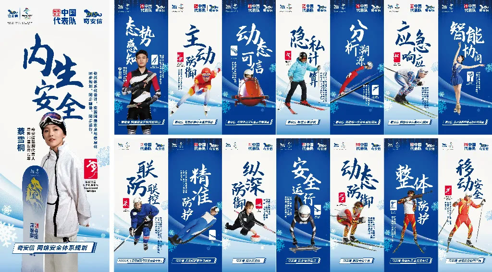
推广口号：冬奥标准奇安信，网络安全零事故。
2022 年 3 月 20 日，奇安信集团召开“零事故，庆凯旋，再出征”主题年会，后冬奥时期“零事故”的品牌传播就此全面展开。
6华与华创意持续改善助力奇安信构建品牌传播“弹药库”
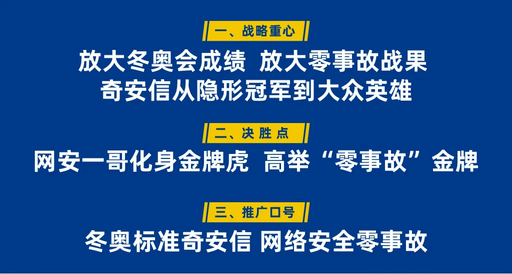
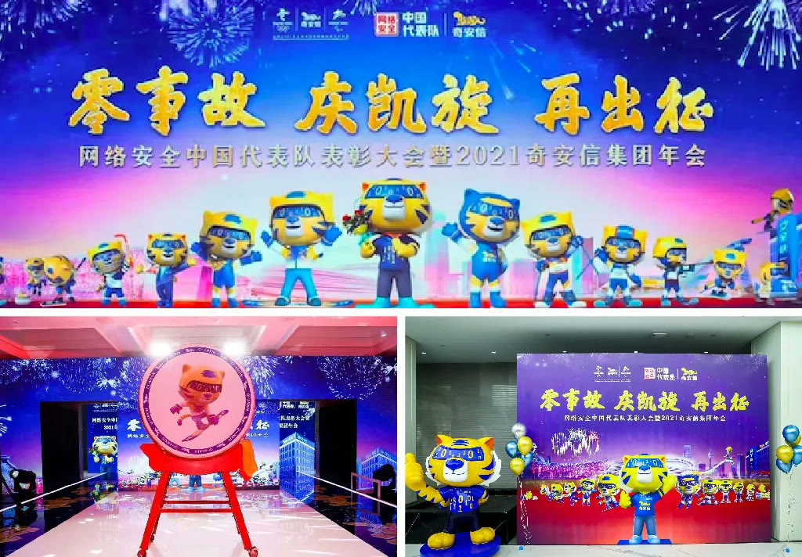
以门店改善思路，助力奇安信全年展会营销“降本增效”和 to C 不同， to B 品牌门店不是在卖场里或者专卖店里，而是在每年的行业展会上。以年为单位，奇安信形成固定了会议营销日历，并在网安行业的客户脑海中形成了生物钟。比如 2021 年奇安信共举办参与 21 场线下国家级品牌活动，每到数字中国展会、首都安全周、 BCS 北京网络安全、服贸会、乌镇世界互联网大会等时间，客户自然会关注奇安信的展出活动。奇安信、华与华双方团队合作，将全年展示内容标准化、组件化。形成“冬奥标准奇安信，网络安全快一步”和“我们是网络安全中国代表队”等主题展示、“网安一哥”形象高强度重复曝光，共计 6 大类 150 多项标准化展示场景内容，展位每平米搭建成本下降54 %，实现成本降低、效果提升。

7奇安信，网络安全的国之重器企业是手段，社会是目的。企业是一种社会分工机制，是社会的器官，企业的宗旨必须是在企业之外的，要从有我，走向无我。奇安信的企业战略是解决中国网络安全问题，这是我们的品牌承诺，当我们的承诺越完整，社会通过我们解决问题的交易成本就越低，这就是品牌积德。德鲁克说：“人们往往过分高估了一年所能取得的成绩，而大大低估了 30 年、 50 年所能取得的成绩。”做企业，永远要站在 30 年、 50 年的时间长度上去看，这样才能够做出有价值的事情。奇安信从成立至今，构建出了五个市场的价值。
顾客市场
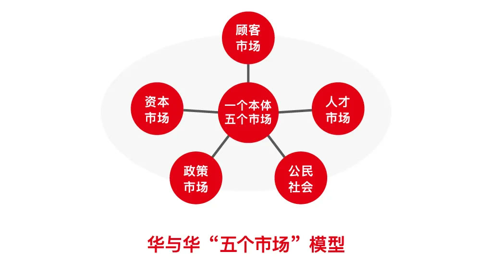
顾客第一，没有顾客，就没有企业。德鲁克说，经营的任务就是创造顾客。如今，奇安信产品已经覆盖 90 %以上的政府部门、央企和国防军队，已成为国家网络安全保障的主力军；同时，为超过 4000 家工业互联网企业及工业关键基础设施提供安全防护、监测和托管服务。
资本市场在网络安全领域，奇安信逐渐发展成为综合实力最强的公司，投资奇安信，就是投资中国网络安全产业，内生安全框架正在发挥越来越大的作用。奇安信帮助政企机构完成数字化转型中的网络安全体系规划，把网络安全投资在信息化中的占比从 1 %- 3 %，提升到了 5 %- 10 %，接近美国现在 10 %的水平，奇安信把中国网络安全市场变大了。2020 年 7 月，奇安信在科创板成功上市，受到资本市场青睐，原计划募资 45 亿元，实际募资达 57 . 19 亿元，创同类型企业 A 股募资额度新高。
政策市场从 2019 年开始举办的北京网络安全大会，已成为极具影响力的全球网络安全盛会及交流平台，大会代表了中国网络安全最高水平和前沿声音，每年提出的最新观点都会成为产业发展的风向标，对产业政策的制定和行业治理产生重大影响。奇安信在网络安全领域已经代表了先进生产力，先进文化，代表顾客利益和社会价值，成为了行业首席知识官，得到了政府的信赖和支持。
人才市场奇安信是网络安全人才心中向往的圣地，目前已拥有亚太地区顶级的安全人才团队，员工规模达 10000 多人。奇安信致力于推动中国多所大专院校开设网络安全专业，作为网络安全领军企业，奇安信一直在网络安全教育领域深化布局，是唯一一家同时在研究型人才、应用型人才、继续教育、特殊人才培养、国家安全意识教育等方面提供完整解决方案的安全企业。
公民社会没有网络安全就没有国家安全，奇安信已成为中国网络安全的守护者，守护着我们身边的每一个重大时刻。在北京冬奥会、“一带一路”国际合作高峰论坛、金砖国家领导人
峰会、建党 100 周年庆典、建国 70 周年庆典、全国两会等重大活动中，奇安信都是保障网络安全的守护者。作为奥运史上首个网络安全官方赞助商，奇安信实现了冬奥网络安全“零事故”的历史性突破，为全球观众呈现了一场安全、精彩的盛会。2022 年，奇安信已支持全国 31 个省市、 2 个特别行政区的现场应急响应服务。随着“奇安信 95015 安全应急快一步”的 24 小时服务热线的开通，奇安信就像争分夺秒，救死扶伤的 120 急救人员一样，做好利国利民的“网安 120 ”。
10 年时间，奇安信、华与华并肩奋战，以“保护中国网络安全”战略为起点，从 0 到 1 构建了今天的中国网络安全第一品牌。10 年时间，两家企业分别在各自领域里成为了领导者和佼佼者，这不仅是两家企业的成功，也是两个团队的成功，更是两位企业家的成功。10 年时间，我们只是刚刚开始；未来，奇安信、华与华将走向终身服务，终身伙伴。
案例总结最后，回顾双方团队相互配合、共同成长的主要成绩：
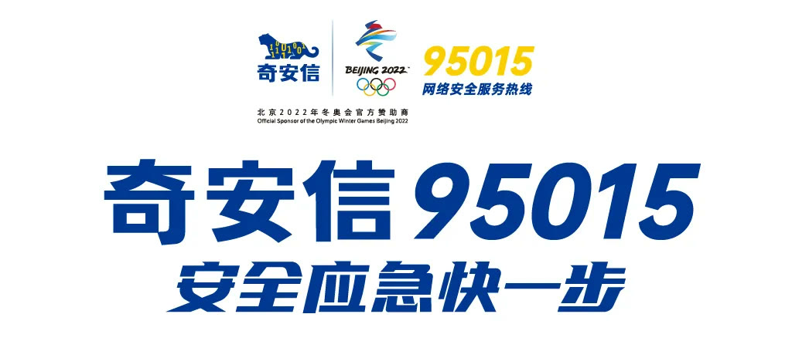
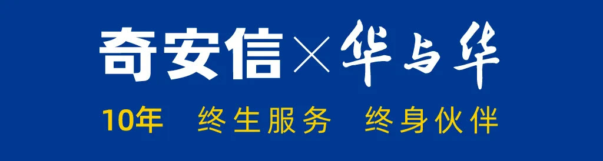
1 ）基于企业家的独到判断，结合华与华企业战略“三位一体”模型，明确保护中国网络安全的企业战略构想，规划三大业务分类：国家网络安全、企业网络安全、用户网络安全，助力奇安信企业“定大计”。2 ）建立了奇安信品牌三角形。找到文化母体，创作“数据虎符”超级符号和“网安一哥”超级角色为核心的符号系统；奇安信“三个快一步”为核心的话语体系，助力奇安信构建品牌传播“解码器”；3 ）共同打造世界级 BCS 北京网络安全大会，助力奇安信构建品牌传播“信号塔”。4 ）超级符号就是超级品牌，奥运前和奥运中-网络安全中国代表队；奥运后-冬奥标准奇安信，网络安全零事故；助力奇安信积累“奥运品牌资产”。5 ）共同持续改善，助力奇安信全年展会营销“降本增效”，新品发布和年会的主题、主视觉等长效品牌工作，助力奇安信构建品牌传播“弹药库”。